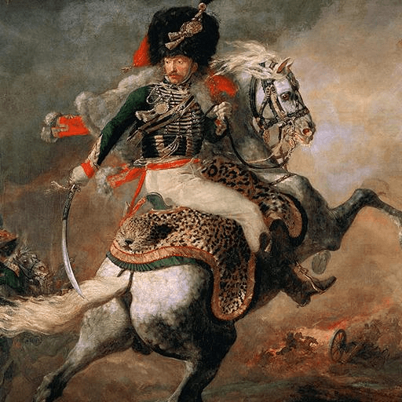

第34卦 雷天大壯：用力，不用蠻力
上卦：雷（☳） ・ 下卦：天（☰）

核心意義
你的力量正處於強盛的時期，精力充沛、氣勢正旺。壯盛是前進的資本，但也容易因過度自信而橫衝直撞；力量必須以正直為方向，懂得自制與守禮，剛強才不會變成魯莽。
「我以剛健的力量向前邁進，同時守住正直的界線。」
祝福
願你擁有充沛的力量去追求想要的一切，也懂得在對的分寸裡展現自己。
五大類別指引
感情
你在關係中正展現出積極與熱情，這是你的優勢。但要注意別讓強勢嚇退對方；展現力量同時尊重對方的節奏，用堅定而溫柔的方式表達，你的魅力會更完整。
展現積極的同時，尊重對方的節奏：
- 用堅定而溫柔的方式表達心意。
- 不讓強勢蓋過關係的溫度。
事業
你的能量與氣勢正處於高峰，適合推進重要計畫與突破瓶頸。此時最大的敵人是過度自信；力量用在對的方向、留有餘地，不逞匹夫之勇，你的強盛才能真正開花結果。
力量用在對的方向，留有餘地：
- 推進重大計畫，但不逞匹夫之勇。
- 過度自信時，主動尋求客觀意見。
健康
你的體能正處於充沛狀態，適合挑戰新的運動目標。但壯盛之時最忌透支；運動強度循序漸進、注意暖身與恢復，別仗著年輕或體力好而忽視身體的警訊。
運動循序漸進，注意暖身與恢復：
- 不仗著體力好而忽視警訊。
- 強度與休息並重，讓體能可長久。
財運
財務上你正展現積極的行動力，可能想大舉投資或擴張。力量強盛時更要守好紀律；不因自信而重押單一標的，設定風險上限，讓強勢的進攻建立在穩固的防守上。
不因自信而重押單一標的：
- 設定明確的風險上限。
- 強勢進攻建立在穩固防守上。
人際
你在人際中正展現出領導的氣勢，說話有分量、行動有影響力。氣勢強時更要留意態度；對人保持尊重與禮貌，不因佔上風而咄咄逼人，強者令人敬佩的是風度。
氣勢強時更留意態度與禮貌：
- 不因佔上風而咄咄逼人。
- 用風度贏得長久的尊敬。